# Merge target and ds directly, as they match and have the same length
ds_new = pd.concat([ds_new, target], axis=1)Option is a financial contract that give the buyer the right to buy or sell certain quantity of assets as specific strike price on or before maturity date, and the buyer needs to pay premium or “option price” in this context to the seller of this contract. Option pricing is a way to evaluate the fair value of an option which corresponds to its striking price, maturity time and risk involved with the stock. In this project, we aim to use one-dimension convolutional neural network to predict the intrinsic value of the call and put options with regard to its final payoff from the contract. Without loss of generality, we used the S&P 500 index as the stock of choice.
The whole project contains three parts: Data preprocessing, CNN model construction and result analysis, and Flask Web Application creation. We first utilize the API and Yahoo Finance to get rudimentary data, do systematic data preprocessing using various techniques, including cleaning, scaling, and database creation using sqlite3. Then we construct the 1D CNN model to predict the option price using pytorch. CNN, namely Convolutional Neural Network, is a type of neural network that is mainly used for image recognition and classification. Here we adopt the 1D version of CNN to predict the intrinsic value of the options. Then we proceed with a robust training session for hyperparameter tuning, early stopping, model evaluation, and result visualization. Finally, we create a web application using Flask to visualize the result and provide a user-friendly interface for users to interact with the model.
All code, data, and results are available on our GitHub repository: https://github.com/Yichen-Wang-2003/24W-PIC16B-Group4.git
Regarding more details, please refer to the flow chart below.
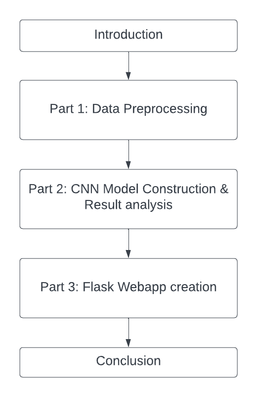
Part 1: Introduction & Data Preprocessing
1.1 Data Acquisition
For the first step of our project is acquiring the data. We found the source data that satisfy our need: Optiondx[link]. This websites contains a text based datasets with end of date data for free. The following is the features. Then, realizing we might need real time stock price data for target, we utilize a package called yfinance which calls yahoo finance’s unofficial api to download data from a time range by yf.download function, which gets us an adjusted closed data at the end of each trading date.
# getting stock prices for target evaluation
import pandas as pd
import yfinance as yf
target = pd.DataFrame(yf.download(['SPY'], start="2023-06-01",
end="2023-12-31")['Adj Close'])
target| Adj Close | |
|---|---|
| Date | |
| 2023-06-01 | 415.798767 |
| 2023-06-02 | 421.811676 |
| 2023-06-05 | 421.003418 |
| 2023-06-06 | 421.920135 |
| 2023-06-07 | 420.461212 |
| … | … |
| 2023-12-22 | 472.182892 |
| 2023-12-26 | 474.176697 |
| 2023-12-27 | 475.034058 |
| 2023-12-28 | 475.213501 |
| 2023-12-29 | 473.837769 |
147 rows × 1 columns
## 1.2 Data Cleaning
For data cleaning, we first import necessary packages including numpy, matplotlib, and sqlite3.
# importing neccessary packages
import numpy as np
import matplotlib.pyplot as plt
import sqlite3We have first removed all the contracts that are later than 2023 as a cutoff point which we will be unable to evaluate their target value at a future date.
# Read in the data from Jan 2023 to May 2023
df_2023_h1 = pd.DataFrame()
for i in [202301, 202302, 202303, 202304, 202305]:
df_2023_h1 = pd.concat([df_2023_h1, pd.read_table(f'data/spy_eod_{i}.txt',
sep=',')], ignore_index=True)
df_2023_h1.columns = df_2023_h1.columns.str.strip()
# also drop expiration date later than 2024
df_2023_h1 = df_2023_h1[df_2023_h1['[EXPIRE_DATE]'] <= ' 2023-12-31']
df_2023_h1 = df_2023_h1[df_2023_h1['[EXPIRE_DATE]'] >= ' 2023-06-01']
df_2023_h1 = df_2023_h1.reset_index()We strip away all the spaces of the column names in this step for easier access, and removed the entries that target cannot be calculated.
# change the string dates to datetime64
df_2023_h1['[QUOTE_DATE]'] = df_2023_h1['[QUOTE_DATE]'].apply(np.datetime64)
df_2023_h1['[EXPIRE_DATE]'] = df_2023_h1['[EXPIRE_DATE]'].apply(np.datetime64)
# merge our adj close stock data on EXPIRE_DATE
target['[EXPIRE_DATE]'] = target.index
target['[EXPIRE_DATE]'].astype('datetime64[ns]')
df_2023_h1 = pd.merge(df_2023_h1, target, on = '[EXPIRE_DATE]')1.3 Setting targets
Then, we have to set a target for our machine learning model. We first utilized a naive estimation of the option price, then start to focus on the intrinsic value of call option. with price = (K - S).
Later, we set our target as intrinsic value of price based on payoff of call and put options, based on the function of discounted price = (K - S) * e^(-rt) where r is a risk free investment rate.
from data_cleansing_function import target_setting
import inspect
print(inspect.getsource(target_setting))
df_2023_h1 = target_setting(df_2023_h1)
target = df_2023_h1['discounted_price']def target_setting(df):
"""
vectorized operation to calculate the target value based on formula
"""
df['-rt'] = -0.04*(df['[EXPIRE_UNIX]'] - df['[QUOTE_UNIXTIME]'])/(3600*365*24)
# unix time is based on seconds
df['price_diff'] = df['[STRIKE]'] - df['Adj Close']
df['exp(-rt)'] = df['-rt'].apply(lambda x: math.exp(x))
df = df.loc[:, ~df.columns.str.contains('^Unnamed')]
df['discounted_price'] = df['price_diff'] * df['exp(-rt)']
return df
We normalize all numerical columns with a standard scaler.
df_2023_h1 = df_2023_h1[['[EXPIRE_UNIX]', '[QUOTE_DATE]', '[EXPIRE_DATE]',
'[STRIKE]', '[UNDERLYING_LAST]', '[C_DELTA]', '[C_GAMMA]', '[C_VEGA]',
'[C_THETA]', '[C_RHO]', '[C_IV]', '[C_VOLUME]','[C_BID]', '[C_ASK]',
'[P_DELTA]', '[P_GAMMA]', '[P_VEGA]', '[P_THETA]',
'[P_RHO]', '[P_IV]', '[P_VOLUME]', '[P_BID]', '[P_ASK]', 'Adj Close']]
df_2023_h1 = df_2023_h1.replace(r'^\s*$', 0, regex=True)
# Basic normalization and standardization
# run block of code and catch warnings
import warnings
from sklearn.preprocessing import StandardScaler
with warnings.catch_warnings():
# ignore all caught warnings
warnings.filterwarnings("ignore")
# execute code that will generate warnings
numeric_cols = ['[EXPIRE_UNIX]', '[STRIKE]', '[UNDERLYING_LAST]',
'[C_DELTA]', '[C_GAMMA]', '[C_VEGA]',
'[C_THETA]', '[C_RHO]', '[C_IV]', '[C_VOLUME]','[C_BID]', '[C_ASK]',
'[P_DELTA]', '[P_GAMMA]', '[P_VEGA]', '[P_THETA]',
'[P_RHO]', '[P_IV]', '[P_VOLUME]', '[P_BID]', '[P_ASK]']
scaler = StandardScaler()
df_2023_h1[numeric_cols] = scaler.fit_transform(df_2023_h1[numeric_cols])target0 -279.724554
1 -269.902630
2 -260.080706
3 -250.258782
4 -245.347819
...
127485 -17.254494
127486 -12.346804
127487 -7.439115
127488 -2.531426
127489 2.376263
Name: discounted_price, Length: 127490, dtype: float64Output the data to sqlite database.
# output to sqlite database for others to use
conn = sqlite3.connect("data/tables.db")
df_2023_h1.to_sql("df_2023_h1_feature", conn, if_exists = "replace", index=False)
target.to_sql("df_2023_h1_target", conn, if_exists = "replace", index=False)
conn.close()1.4 Data Structures
Baseline model: Linear Regression
We need to set a target for the neuron network to beat, if any model cannot beat a linear approximation of stock market in the long run it is a failure.
# custom train test val split with a smaller dataset.
# Read in the data from the database
conn = sqlite3.connect('data/tables.db')
# show database content
cursor = conn.cursor()
cursor.execute("SELECT name FROM sqlite_master WHERE type='table';")
print(cursor.fetchall())
# Extract two tables from it and store them in two pd df
ds = pd.read_sql_query("SELECT * from df_2023_h1_feature", conn)
target = pd.read_sql_query("SELECT * from df_2023_h1_target", conn)
ds = ds.drop(['[QUOTE_DATE]', '[EXPIRE_DATE]', 'Adj Close'], axis=1)
X_train = ds[0:10000]
y_train = target[0:10000]
X_val = ds[10001:11001]
y_val = target[10001:11001]
X_test = ds[11002: 12002]
y_test = target[11002: 12002]
print(X_train.shape, y_train.shape, X_val.shape, y_val.shape,
X_test.shape, y_test.shape)[('df_2023_h1_feature',), ('df_2023_h1_target',)]
(10000, 21) (10000, 1) (1000, 21) (1000, 1) (1000, 21) (1000, 1)target = pd.read_sql_query("SELECT * from df_2023_h1_target", conn)
target| discounted_price | |
|---|---|
| 0 | -279.724554 |
| 1 | -269.902630 |
| 2 | -260.080706 |
| 3 | -250.258782 |
| 4 | -245.347819 |
| … | … |
| 127485 | -17.254494 |
| 127486 | -12.346804 |
| 127487 | -7.439115 |
| 127488 | -2.531426 |
| 127489 | 2.376263 |
127490 rows × 1 columns
Utilizing a simple linear regression model from sklearn, we can get a baseline model to compare with our neural network.
from sklearn.linear_model import LinearRegression
from sklearn import metrics
reg = LinearRegression()
reg.fit(X_train, y_train)LinearRegression()In a Jupyter environment, please rerun this cell to show the HTML representation or trust the notebook.
On GitHub, the HTML representation is unable to render, please try loading this page with nbviewer.org.
LinearRegression()
With this code block we can output a r2_list to check r2 and mse for a range of values for their relationship with the distance with train set, and output plot graphs.
r2_list = []
mse_list = []
X_list = []
for i in range(10):
X_test = ds.iloc[10000 + i * 10000:11000 + i * 10000]
y_test = target.iloc[10000 + i * 10000:11000 + i * 10000]
y_pred = reg.predict(X_test)
X_list.append(10000 + i * 10000)
r2_list.append(metrics.r2_score(y_true=y_test, y_pred=y_pred))
mse_list.append(metrics.mean_squared_error(y_true=y_test, y_pred=y_pred))plt.plot(X_list, r2_list)
plt.title('R2 Score for baseline model')Text(0.5, 1.0, 'R2 Score for baseline model')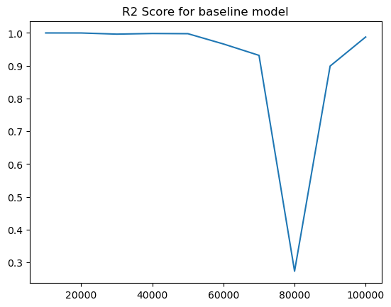
plt.plot(X_list, mse_list)
plt.title('MSE Loss for baseline model')Text(0.5, 1.0, 'MSE Loss for baseline model')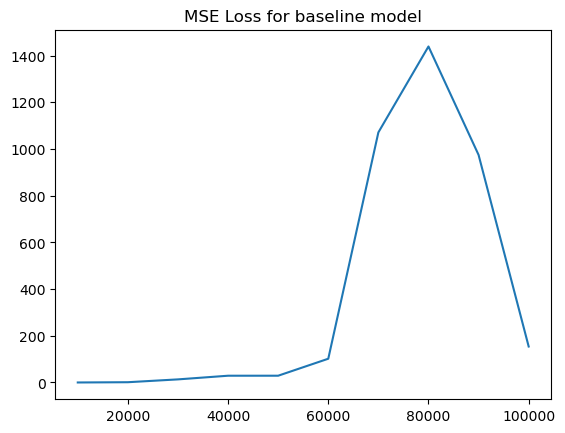
Linear regression model is not performing well after 80000 rows, which shows that the linear approximation of stock is not good enough for prediction further into the future. We shall see the CNN performance in the next section.
Part 2: One-Dimensional Convolutional Neural Network (CNN) for Predictions of Intrinsic value of call and put option
After data-preprocessing, we have deepened our understanding of the dataset and the information contained in each column. Since our goal is to predict the intrinsic value of stocks, which by definition is a regression problem, we will use a one-dimensional Convolutional Neural Network (CNN) to predict the intrinsic value of call and put options. The predictions provide a good estimate of the intrinsic value of the options, which can be used as a reference for the amount of payoff that the options will provide.
2.1 Feature and Target Selection
The first step of our model building process is to select the features and target. We will use PyTorch to build the CNN model. PyTorch is a popular open-source machine learning library based on the Torch library, flexible and powerful for machine learning tasks. We will use the torch and torchvision libraries to build the CNN model.
import numpy as np
import pandas as pd
import torch
from torch import nn
from torch.utils.data import DataLoader
from torchvision import datasets
from torchvision.transforms import ToTensor
import sqlite3
import mathAfter importing all the necessary libraries, we will load the preprocessed dataset from the database. By using the sqlite3 library, we can connect to the database and load the dataset into a pandas dataframe. As shown below, we first create a cursor and use the SQL command to fetch the data from the database. We have two tables in the database, one for feature, and the other for target.
# Read in the data from the database
conn = sqlite3.connect('tables.db')
cursor = conn.cursor()
cursor.execute("SELECT name FROM sqlite_master WHERE type='table';")
print(cursor.fetchall())
# Extract two tables from it and store them in two pd df
ds = pd.read_sql_query("SELECT * from df_2023_h1_feature", conn)
target = pd.read_sql_query("SELECT * from df_2023_h1_target", conn)[('df_2023_h1_feature',), ('df_2023_h1_target',)]We first take a look at the feature table named ds, and we make a copy of it for backup. As shown below, the feature table has a structure of 331609 rows × 22 columns, which has been preprossed in the previous section. We will then do feature selection from it.
ds_new = ds.copy()
ds| Index | [QUOTE_UNIXTIME] | [EXPIRE_UNIX] | [STRIKE] | [UNDERLYING_LAST] | [C_DELTA] | … |
|---|---|---|---|---|---|---|
| 0 | -1.69160 | -1.531564 | -1.054517 | -2.406592 | 1.054125 | … |
| 1 | -1.69160 | -1.531564 | -0.936052 | -2.406592 | 1.041020 | … |
| 2 | -1.69160 | -1.531564 | -0.888665 | -2.406592 | 1.035470 | … |
| 3 | -1.69160 | -1.531564 | -0.876819 | -2.406592 | 1.048893 | … |
| 4 | -1.69160 | -1.531564 | -0.864972 | -2.406592 | 1.030873 | … |
| … | … | … | … | … | … | … |
| 331604 | 1.78216 | 1.881977 | 0.367073 | 1.410238 | -0.175447 | … |
| 331605 | 1.78216 | 1.881977 | 0.426306 | 1.410238 | -0.288188 | … |
| 331606 | 1.78216 | 1.881977 | 0.485538 | 1.410238 | -0.406236 | … |
| 331607 | 1.78216 | 1.881977 | 0.544771 | 1.410238 | -0.524528 | … |
| 331608 | 1.78216 | 1.881977 | 0.604004 | 1.410238 | -0.647832 | … |
Theen we take a glance at the target table with merely one column named “discounted_price”. This column will be the target for our CNN model, as all feature engineering has been done in the data preprocessing phase.
target| discounted_price | |
|---|---|
| 0 | -63.916774 |
| 1 | -54.101350 |
| 2 | -50.175181 |
| 3 | -49.193639 |
| 4 | -48.212096 |
| … | … |
| 331604 | -18.619560 |
| 331605 | -13.711848 |
| 331606 | -8.804136 |
| 331607 | -3.896425 |
| 331608 | 1.011287 |
331609 rows × 1 columns
For the feature and target selections, we first concatenate the feature and target tables together.
ds_new.columnsIndex(['[QUOTE_UNIXTIME]', '[EXPIRE_UNIX]', '[STRIKE]', '[UNDERLYING_LAST]',
'[C_DELTA]', '[C_GAMMA]', '[C_VEGA]', '[C_THETA]', '[C_RHO]', '[C_IV]',
'[C_VOLUME]', '[C_BID]', '[C_ASK]', '[P_DELTA]', '[P_GAMMA]',
'[P_VEGA]', '[P_THETA]', '[P_RHO]', '[P_IV]', '[P_VOLUME]', '[P_BID]',
'[P_ASK]', 'discounted_price'],
dtype='object')We finalize the features and target_1 as our final features and target for the 1D CNN model. We select all option greeks for call and put as well as the quote and expire dates for features; and we multiply the “price_diff” by the exp(-rt) to get the target_1.
features = ds_new[['[QUOTE_UNIXTIME]', '[EXPIRE_UNIX]', '[STRIKE]',
'[UNDERLYING_LAST]', '[C_DELTA]', '[C_GAMMA]', '[C_VEGA]',
'[C_THETA]', '[C_RHO]', '[C_IV]', '[C_VOLUME]','[C_BID]',
'[C_ASK]', '[P_DELTA]', '[P_GAMMA]', '[P_VEGA]', '[P_THETA]',
'[P_RHO]', '[P_IV]', '[P_VOLUME]', '[P_BID]', '[P_ASK]']].values
target_1= ds_new['discounted_price']2.2 Train, Validation, and Test Data Split
After feature engineering, we now do the train, validation, and test data split. We will directly use slicing to create the three datasets but not sklearn’s train_test_split function, because each expire date has multiple strike prices, so we need to ensure the integrity of each expire date’s information. The proportion of the train, validation, and test datasets is 0.8, 0.1, and 0.1, respectively. We will use the first 80% of the data for training, the next 10% for validation, and the last 10% for testing.
# Manually using slicing to create the train, validation and test dataset in percentage of 80, 10, 10
X_train = features[:int(0.8*len(features))]
X_val = features[int(0.8*len(features)):int(0.9*len(features))]
X_test = features[int(0.9*len(features)):]
y_train = target_1[:int(0.8*len(target_1))]
y_val = target_1[int(0.8*len(target_1)):int(0.9*len(target_1))]
y_test = target_1[int(0.9*len(target_1)):]Then we convert these datasets to PyTorch tensors, and then we print out the shapes of the three datasets to ensure that the data split is successful.
# Convert the data to tensor
X_train = torch.from_numpy(X_train).type(torch.Tensor)
X_val = torch.from_numpy(X_val).type(torch.Tensor)
X_test = torch.from_numpy(X_test).type(torch.Tensor)
y_train = torch.from_numpy(y_train.values).type(torch.Tensor)
y_val = torch.from_numpy(y_val.values).type(torch.Tensor)
y_test = torch.from_numpy(y_test.values).type(torch.Tensor)print("Train shapes:", X_train.shape, y_train.shape)
print("Validation shapes:", X_val.shape, y_val.shape)
print("Test shapes:", X_test.shape, y_test.shape)Train shapes: torch.Size([265287, 22]) torch.Size([265287])
Validation shapes: torch.Size([33161, 22]) torch.Size([33161])
Test shapes: torch.Size([33161, 22]) torch.Size([33161])We need to do some unsqueeze operations to make the data suitable for the CNN model. The CNN model requires the input to be in the shape of (batch_size, channels, sequence_length), so we need to unsqueeze the second dimension of the input data to make it suitable for the CNN model.
X_train = X_train.unsqueeze(2)
print(X_train.shape)
X_val = X_val.unsqueeze(2)
print(X_val.shape)
X_test = X_test.unsqueeze(2)
print(X_test.shape)torch.Size([265287, 22, 1])
torch.Size([33161, 22, 1])
torch.Size([33161, 22, 1])2.3 1D CNN Model Construction
As all the data is ready, we now construct the 1D CNN Model for the intrinsic value prediction. Before building the class of the model, we first import all torch related libraries and then define the model, including the torch.nn.functional library.
import torch
from torch import nn
import torch.nn.functional as FIn order to ensure the robustness and generalization of the model, the CNN we create has the following structure:
Initial Convolution Block:
- Conv1d: 22 input channels, 64 output channels, kernel size=3, stride=1, padding=1
- BatchNorm1d: 64 features (output channels)
- Interpretation: The initial convolution block is used to extract the features from the input data, and the batch normalization layer is used to normalize the features to ensure that the features are in the same scale.
Residual Chunk 1:
- Conv1d: 64 input channels, 64 output channels, kernel size=3, padding=1
- BatchNorm1d: 64 features
- Conv1d: 64 input channels, 64 output channels, kernel size=3, padding=1
- BatchNorm1d: 64 features
- Note: Residual connection adds the input of the chunk to its output after these layers.
- Interpretation: The first residual chunk preserves the number of channels at 64 but allows the model to learn an identity function easily, ensuring the layer can improve performance without hurting existing capabilities. It also helps solve gradient vanishing problem.
Residual Chunk 2:
- Conv1d: 64 input channels, 128 output channels, kernel size=3, padding=1, stride=2
- BatchNorm1d: 128 features
- Conv1d: 128 input channels, 128 output channels, kernel size=3, padding=1
- BatchNorm1d: 128 features
- Shortcut Connection (for residual addition):
- Conv1d: 64 input channels, 128 output channels, kernel size=1, stride=2
- Interpretation: The second residual chunk includes a shortcut connection with a 1D convolutional layer (
self.res2_shortcut) to match the dimensionality change for the residual connection. Other functionalities remain the same as the first Res Chunk.
Dropout Layer:
- Dropout: 0.3 probability.
- Interpretation: The dropout layer is pplied to reduce overfitting by randomly setting input elements to zero during training with a probability of 0.3 (
self.dropout).
Adaptive Pooling and Fully Connected Layers:
- AdaptiveAvgPool1d: Output size of 1
- Linear FC layer: 128 input features, 128 output features
- Dropout: 0.3 probability
- Linear FC layer: 128 input features, 128 output features
- Dropout: 0.3 probability
- Linear FC layer: 128 input features, 128 output features
- Dropout: 0.3 probability
- Linear FC layer: 128 input features, 1 output feature
- Interpretation: The adaptive pooling layer is used to output a fixed-length output irrespective of input size, facilitating the connection to fully connected layers. The linear fully connected layers with dropoutapplied between them help to further prevent overfitting. The last fully connected layer reduces the output to 1 dimension.
And the visualization of the model structure is shown below: 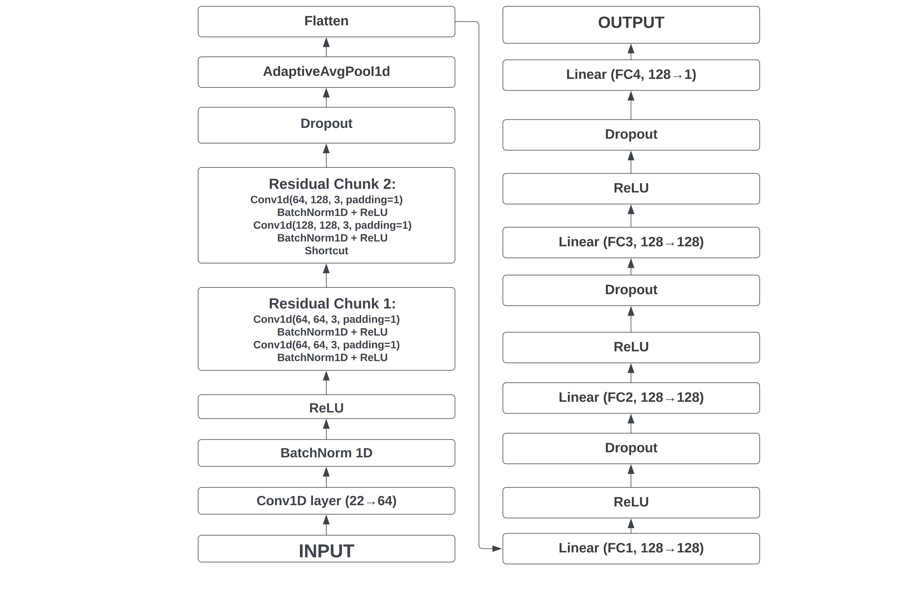
We then import the python file CNN_CODE.py to access the CNN class and all necessary code, and then inspect to use them.
from CNN_CODE import Convolution1D
import inspect
print(inspect.getsource(Convolution1D))class Convolution1D(nn.Module):
def __init__(self):
'''
Convolutional Neural Network with 1D convolutions
params:
- input_channels: number of input channels
- output_channels: number of output channels
- kernel_size: size of the kernel
- stride: stride of the kernel
- padding: padding of the kernel
'''
super(Convolution1D, self).__init__()
# Initial Convolution
# 22 input channels (features), 64 output channels, 3x3 kernel
self.conv1 = nn.Conv1d(in_channels=22, out_channels=64,
kernel_size=3, stride=1, padding=1)
# Batch Normalization with 64 features
self.bninit = nn.BatchNorm1d(64)
# Residual chunk 1
self.res1_conv1 = nn.Conv1d(64, 64, 3, padding=1)
self.res1_bn1 = nn.BatchNorm1d(64)
self.res1_conv2 = nn.Conv1d(64, 64, 3, padding=1)
self.res1_bn2 = nn.BatchNorm1d(64)
# Residual chunk 2
self.res2_conv1 = nn.Conv1d(64, 128, 3, padding=1,
stride=2) # Reduce dimensionality
self.res2_bn1 = nn.BatchNorm1d(128)
self.res2_conv2 = nn.Conv1d(128, 128, 3, padding=1)
self.res2_bn2 = nn.BatchNorm1d(128)
self.res2_shortcut = nn.Conv1d(64, 128, 1,
stride=2) # Shortcut to match dimensions
# Dropout layer
self.dropout = nn.Dropout(0.3)
# Final global pooling and fully connected layers
self.global_pool = nn.AdaptiveAvgPool1d(1)
self.fc1 = nn.Linear(128, 128)
self.fc2 = nn.Linear(128, 128)
self.fc3 = nn.Linear(128, 128)
self.fc4 = nn.Linear(128, 1)
def forward(self, x):
# Initial conv layer
x = F.relu(self.bninit(self.conv1(x)))
# Residual Chunk 1
res1 = self.res1_conv1(x)
res1 = F.relu(self.res1_bn1(res1))
res1 = self.res1_conv2(res1)
x = F.relu(x + res1)
# Residual Chunk 2
res2 = self.res2_conv1(x)
res2 = F.relu(self.res2_bn1(res2))
res2 = self.res2_conv2(res2)
shortcut = self.res2_shortcut(x)
x = F.relu(res2 + shortcut)
# Final layers
x = self.global_pool(x)
x = torch.flatten(x, 1)
x = self.dropout(x)
x = F.relu(self.fc1(x))
x = self.dropout(F.relu(self.fc2(x)))
x = self.dropout(F.relu(self.fc3(x)))
x = self.fc4(x)
return x2.4 Model Training and Validation
As we constructed our CNN model, we now train and validate the model. We first define the loss function and the optimizer, using the Mean Squared Error (MSE) loss function to calculate the loss and the Adam optimizer to optimize the model. We set the learning rate as 0.01 and the weight decay as 0.0001. We also set various hyperparameters, including the number of epochs and the device to train the model. We set the number of epochs to 100 and the device to “cuda” if it is available; otherwise, we use “cpu”.
Also, for preventing early stopping, we use the patience parameter to set the number of epochs to wait for improvement before stopping the training process. We set the patience to 15, which means that if the validation loss does not improve for 15 epochs, the training process will stop. We also set the L2 regularization to 0.0001 to prevent overfitting.
Then, we create a loop to train and validate the model. We first set the model to training mode and then iterate through the training dataset, then compute the loss and update the model parameters using the optimizer, with the backward propagation.
After this, we set the model to evaluation mode and iterate through the validation dataset to calculate the validation loss. We also print out the training and validation loss for each epoch to monitor the training process. Should the early stopping condition is met, we use torch.save to save the model and stop the training process. The training and validation loss of each epoch are stored, and they are printed as below.
from torch import optim
model = Convolution1D()
val_loss_list, train_loss_list =[],[]
final_epoch = 0
criterion = nn.MSELoss()
optimizer = torch.optim.Adam(model.parameters(), lr=1e-2, weight_decay=1e-4)
device = torch.device('cuda' if torch.cuda.is_available() else 'cpu')
# For early stopping
patience = 15
optimal_val_loss = np.inf
current_patience = 0
# Training phase
num_epochs = 100
for epoch in range(num_epochs):
model.train()
optimizer.zero_grad()
outputs = model(X_train).squeeze(-1)
loss = criterion(outputs, y_train)
train_loss_list.append(loss)
# Backward and optimize
optimizer.zero_grad()
loss.backward()
optimizer.step()
# Validation phase
model.eval()
with torch.no_grad():
val_outputs = model(X_val).squeeze(-1)
val_loss = criterion(val_outputs, y_val)
val_loss_list.append(val_loss)
# Early stopping
if val_loss < optimal_val_loss:
optimal_val_loss = val_loss
torch.save(model.state_dict(), 'best_model.pt')
current_patience = 0
else:
current_patience += 1
if current_patience == patience:
print(f'Early stopping at epoch {epoch+1}')
final_epoch = epoch
# load best model
model.load_state_dict(torch.load('best_model.pt'))
break
if (epoch+1) % 1 == 0:
print(f'Epoch [{epoch+1}/{num_epochs}], Loss: {loss.item()},
Val Loss: {val_loss.item()}')Epoch [1/100], Loss: 9172.8681640625, Val Loss: 1818.197265625
Epoch [2/100], Loss: 9102.5693359375, Val Loss: 1751.77685546875
Epoch [3/100], Loss: 8275.830078125, Val Loss: 1398.82080078125
Epoch [4/100], Loss: 5244.42724609375, Val Loss: 681.4796752929688
Epoch [5/100], Loss: 7110.5087890625, Val Loss: 1006.462890625
Epoch [6/100], Loss: 3426.317626953125, Val Loss: 1126.9154052734375
Epoch [7/100], Loss: 4286.83154296875, Val Loss: 938.3817749023438
Epoch [8/100], Loss: 4022.037109375, Val Loss: 682.0269165039062
Epoch [9/100], Loss: 3196.9482421875, Val Loss: 917.9542236328125
Epoch [10/100], Loss: 3701.21533203125, Val Loss: 181.23085021972656
Epoch [11/100], Loss: 1524.900634765625, Val Loss: 389.5296936035156
Epoch [12/100], Loss: 1103.0982666015625, Val Loss: 1594.5777587890625
Epoch [13/100], Loss: 1861.9698486328125, Val Loss: 2287.84619140625
Epoch [14/100], Loss: 2340.36279296875, Val Loss: 1141.52294921875
Epoch [15/100], Loss: 1081.2857666015625, Val Loss: 313.52301025390625
Epoch [16/100], Loss: 581.6431274414062, Val Loss: 108.076416015625
Epoch [17/100], Loss: 932.9679565429688, Val Loss: 140.25146484375
Epoch [18/100], Loss: 1336.6429443359375, Val Loss: 145.90013122558594
Epoch [19/100], Loss: 1214.3756103515625, Val Loss: 147.10081481933594
Epoch [20/100], Loss: 815.1370239257812, Val Loss: 339.05621337890625
Epoch [21/100], Loss: 572.9165649414062, Val Loss: 836.8012084960938
Epoch [22/100], Loss: 672.4065551757812, Val Loss: 1281.7899169921875
Epoch [23/100], Loss: 980.5892944335938, Val Loss: 1051.82470703125
Epoch [24/100], Loss: 892.7532958984375, Val Loss: 498.3086853027344
Epoch [25/100], Loss: 542.4771728515625, Val Loss: 207.02662658691406
Epoch [26/100], Loss: 491.0587463378906, Val Loss: 146.8715362548828
Epoch [27/100], Loss: 674.1841430664062, Val Loss: 121.95735168457031
Epoch [28/100], Loss: 770.651611328125, Val Loss: 80.98929595947266
Epoch [29/100], Loss: 654.6914672851562, Val Loss: 91.96054077148438
Epoch [30/100], Loss: 492.27069091796875, Val Loss: 207.66490173339844
Epoch [31/100], Loss: 465.4485168457031, Val Loss: 369.939453125
Epoch [32/100], Loss: 586.9057006835938, Val Loss: 391.50579833984375
Epoch [33/100], Loss: 624.5753173828125, Val Loss: 241.49102783203125
Epoch [34/100], Loss: 500.69305419921875, Val Loss: 101.10918426513672
Epoch [35/100], Loss: 427.59552001953125, Val Loss: 51.98616027832031
Epoch [36/100], Loss: 483.1625061035156, Val Loss: 47.67477798461914
Epoch [37/100], Loss: 545.8229370117188, Val Loss: 41.39034652709961
Epoch [38/100], Loss: 508.1427917480469, Val Loss: 36.485774993896484
Epoch [39/100], Loss: 438.0169677734375, Val Loss: 54.16953659057617
Epoch [40/100], Loss: 421.1383056640625, Val Loss: 88.96914672851562
Epoch [41/100], Loss: 471.10845947265625, Val Loss: 100.9154281616211
Epoch [42/100], Loss: 480.3539123535156, Val Loss: 75.54594421386719
Epoch [43/100], Loss: 429.4358215332031, Val Loss: 47.808441162109375
Epoch [44/100], Loss: 406.1731262207031, Val Loss: 37.47623825073242
Epoch [45/100], Loss: 435.10394287109375, Val Loss: 32.7606086730957
Epoch [46/100], Loss: 452.689697265625, Val Loss: 29.308931350708008
Epoch [47/100], Loss: 420.9671630859375, Val Loss: 36.494937896728516
Epoch [48/100], Loss: 396.0536193847656, Val Loss: 55.476470947265625
Epoch [49/100], Loss: 404.5439453125, Val Loss: 68.0870361328125
Epoch [50/100], Loss: 423.883544921875, Val Loss: 56.49263381958008
Epoch [51/100], Loss: 408.332275390625, Val Loss: 35.67536163330078
Epoch [52/100], Loss: 384.791748046875, Val Loss: 25.1159725189209
Epoch [53/100], Loss: 388.8431091308594, Val Loss: 23.977157592773438
Epoch [54/100], Loss: 401.4180603027344, Val Loss: 23.906402587890625
Epoch [55/100], Loss: 395.3701477050781, Val Loss: 24.9521484375
Epoch [56/100], Loss: 379.8179931640625, Val Loss: 29.47606658935547
Epoch [57/100], Loss: 381.36181640625, Val Loss: 33.6275520324707
Epoch [58/100], Loss: 389.26708984375, Val Loss: 31.371234893798828
Epoch [59/100], Loss: 382.2471008300781, Val Loss: 26.508771896362305
Epoch [60/100], Loss: 369.72607421875, Val Loss: 24.71722984313965
Epoch [61/100], Loss: 373.2747802734375, Val Loss: 24.789255142211914
Epoch [62/100], Loss: 372.1296691894531, Val Loss: 25.448476791381836
Epoch [63/100], Loss: 372.6578063964844, Val Loss: 27.88591957092285
Epoch [64/100], Loss: 366.294189453125, Val Loss: 32.301979064941406
Epoch [65/100], Loss: 366.24237060546875, Val Loss: 34.39863967895508
Epoch [66/100], Loss: 362.286376953125, Val Loss: 31.689903259277344
Epoch [67/100], Loss: 360.7981872558594, Val Loss: 28.11236572265625
Epoch [68/100], Loss: 357.0233459472656, Val Loss: 27.745023727416992
Early stopping at epoch 69As shown above, the training phase terminates at epoch 69 due to early stopping, and we can see the rapid decrease of both training and validation loss in the first couple of epochs, which means that the model is learning well. For the last epoch, which is epoch 62, the validation loss is around 27.74, which is a good result for our model. This is because the intrinsic value of the options has a range of over 600, and the square root of the loss is around 5.26, which is a small percentage of the intrinsic value.
2.5 Model Testing and Analysis of Testing Results
After finishing the training and validation process, we test the model using the test dataset. We first load the saved model and set it to evaluation mode. Then we iterate through the test dataset to calculate the test loss. We also print out the test loss to evaluate the performance of the model, as shown below.
model.eval()
with torch.no_grad():
predictions = model(X_test).squeeze(-1)
test_loss = criterion(predictions, y_test)
print(f'Test Loss: {test_loss.item()}')
criterion = torch.nn.MSELoss()
mse_loss = criterion(predictions, y_test)
print(f"MSE Loss: {mse_loss.item()}")
print(f"RMSE Loss: {(mse_loss.item()**(0.5))}")
# R2 score
from sklearn.metrics import r2_score
r2 = r2_score(y_test, predictions)
print(f"R2 Score: {r2}")Test Loss: 34.36250305175781
MSE Loss: 34.36250305175781
RMSE Loss: 5.8619538595725755
R2 Score: 0.9812109767170123As shown above, we get the test loss(MSE) of around 34.26, which indicates that the model is performing well on the test dataset. As the fluctuation of the intrinsic value of the options is large with a range of 350, the test loss of 34.26 is a good result for our model. We then visualize the predicted intrinsic value and the actual intrinsic value of the options to see how well the model performs. We plot the predicted intrinsic value and the actual intrinsic value of the options within the test dataset using matplotlib, as shown below.
import matplotlib.pyplot as plt
plt.figure(figsize=(14,7))
plt.plot(predictions, label='Predicted',color = 'red')
plt.plot(y_test, label = "True", color = 'blue')
plt.legend()
plt.title('Test Set Predictions')Text(0.5, 1.0, 'Test Set Predictions')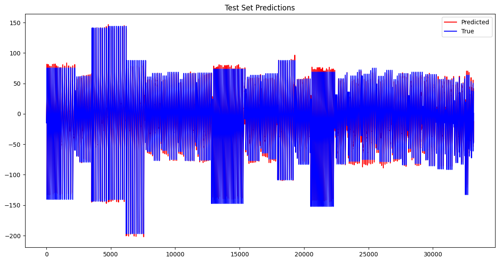
The visualization above sufficiently showcases the complexity of the intrinsic value and the model’s strong ability to capture the features of the intrinsic value. As the blue curve stands for the ground truth, and the red curve stands for the predictions, we can see that the red curve is very close to the blue curve and two curves largely overlap. This indicates that the model we construct is robust and generalizes well to the test dataset.
We also visualize the train and validation losses, as we need to see if there is any overfitting or underfitting. We first convert each element in two lists storing validation and train losses from torch tensor to numpy array. Then we use matplotlib to draw the plot.
As shown below, the train and validation losses are plotted against the number of epochs. We observe that there is no evidence of overfitting here. Both losses decrease rapidly at the beginning with some fluctuations,but in general they tend to level off, suggesting that the model is learning generalizable patterns.
val_loss_numpy, train_loss_numpy = [],[]
for i in val_loss_list:
val_loss_numpy.append(i.numpy())
for j in train_loss_list:
train_loss_numpy.append(j.detach().numpy())
import matplotlib.pyplot as plt
plt.plot(train_loss_numpy, label='Train Loss')
plt.plot(val_loss_numpy, label='Validation Loss')
plt.xlabel('Epoch')
plt.ylabel('Loss')
plt.legend()
plt.title("Train vs Validation Loss")
plt.show()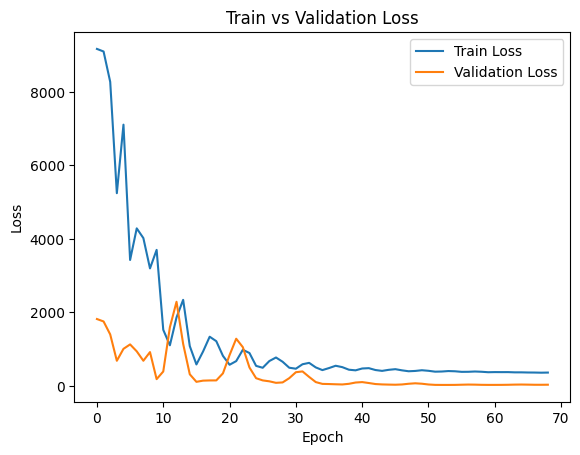
From our experience with the baseline Linear Regression Model and Autogluon Model, the R2 score drops quickly against time periods, and MSE loss shoots up fast. With the CNN model, we tested both against time as a metric against previous models. The timestamp in these graphs is standardized.
test_part = y_test.numpy()
# print(len(test_part))
pred_part = predictions.numpy()
# print(len(another))
test_part = pd.DataFrame(test_part)
pred_part = pd.DataFrame(pred_part)
ds_test = ds_new[int(0.9*len(features)):].reset_index(drop=True)
# print(ds_test)
test_part.columns = ['true_intrinsic']
pred_part.columns = ['pred_intrinsic']
together = pd.concat([ds_test, test_part],axis=1)
together = pd.concat([together, pred_part],axis=1)
# print(together)
print(together.columns)Index(['[QUOTE_UNIXTIME]', '[EXPIRE_UNIX]', '[STRIKE]', '[UNDERLYING_LAST]',
'[C_DELTA]', '[C_GAMMA]', '[C_VEGA]', '[C_THETA]', '[C_RHO]', '[C_IV]',
'[C_VOLUME]', '[C_BID]', '[C_ASK]', '[P_DELTA]', '[P_GAMMA]',
'[P_VEGA]', '[P_THETA]', '[P_RHO]', '[P_IV]', '[P_VOLUME]', '[P_BID]',
'[P_ASK]', 'discounted_price', 'true_intrinsic', 'pred_intrinsic'],
dtype='object')import pandas as pd
import matplotlib.pyplot as plt
from sklearn import metrics
result_df = togetherplt.xlabel('timestamp')
plt.ylabel('R2 score')
plt.title("R2 score Across Time")
plt.plot(result_df[['[QUOTE_UNIXTIME]', 'true_intrinsic',
'pred_intrinsic']].groupby('[QUOTE_UNIXTIME]').apply(lambda x:
metrics.r2_score(x['true_intrinsic'], x['pred_intrinsic'])))
plt.show()The R2 score trend shown below is kind of turbulent, and in general the R2 score remains stable over time. Also, R2 score has a much better performance than the baseline model as we can see its value never goes below 0.95.
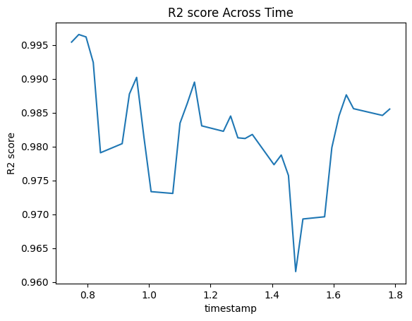
plt.xlabel('timestamp')
plt.ylabel('MSE Loss')
plt.title("MSE Loss Across Time")
plt.plot(result_df[['[QUOTE_UNIXTIME]', 'true_intrinsic',
'pred_intrinsic']].groupby('[QUOTE_UNIXTIME]').apply(lambda x:
metrics.mean_squared_error(x['true_intrinsic'], x['pred_intrinsic'])))
plt.show()THe MSE loss also performs a fluctuating trend, but it is way smaller than the baseline model’s MSE loss. So the CNN model is a good choice for the intrinsic value prediction of options and the performance is pretty good.
[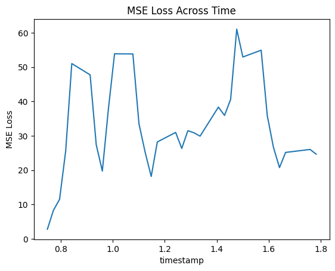
With similar test and train sizes, the CNN model produces much more stable results over extended periods of time than other models. With a rather random and non-Gaussian dataset, this BEYOND-PIC16B-level model performs relatively well into the future and can produce better results than traditional machine learning algorithms utilized in PIC16A.
Part 3: Flask Web App Development for Option Intrinsic Value Prediction
After completing data preprocessing and constructing a one-dimensional Convolutional Neural Network (CNN), we have successfully enabled the prediction of call and put options’ intrinsic values. The subsequent step involves operationalizing this model: we will explore how to integrate it into a web application, thus allowing users to make predictions and view results. This transition marks our shift from theoretical analysis to practical application, demonstrating the real-world utility of our intellectual efforts.
3.0 Web App Implementation Outline
The implementation strategy for our Flask web application development can be encapsulated as follows:
Web Application Framework Construction: Utilize the Flask framework to build a web application that processes user-uploaded financial data and displays prediction outcomes.
Model Preparation: Define a Convolutional Neural Network (CNN) specifically designed for financial data prediction. This model includes multiple convolutional layers, batch normalization layers, and residual connections to boost performance and training efficiency—a milestone already achieved by our team.
Model Loading and Data Preprocessing: Load the pre-trained model (
best_model_ultimatel.pth) and perform data preprocessing. This step involves reading data from an uploaded CSV file and applying the preprocess_data function to execute feature scaling, data splitting, and other preparatory operations, mirroring the CNN model setup.Model Training and Prediction: Employ the PyTorch library to load the pre-trained model and input the preprocessed data for prediction.
Results Presentation: Exhibit the model’s performance metrics on the test dataset, such as Mean Squared Error (MSE), Root Mean Squared Error (RMSE), and R-squared score, along with the prediction outcomes. These are visualized using
Plotlycharts, providing a comprehensive view to the users.
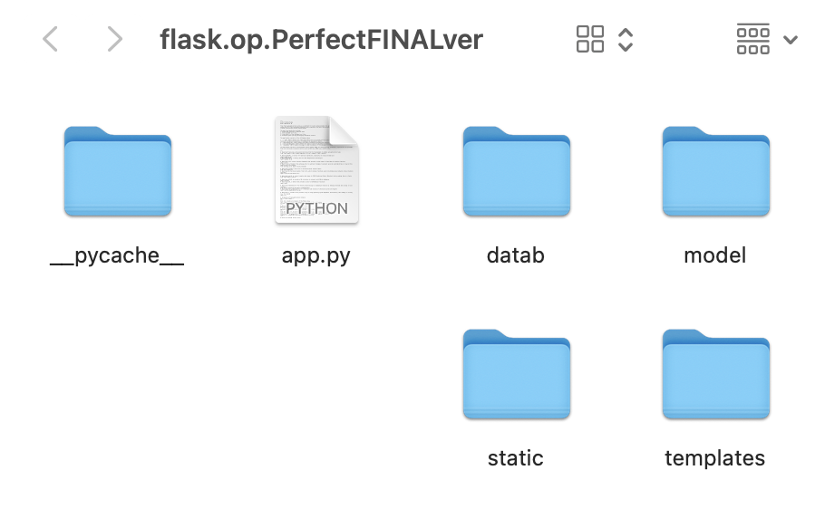
app.py: Central to the application, this file contains key functions likeConvolution1D,preprocess_data,Index,show_prediction,get_table_info,view_uploaded_database, andview_database, which are integral to the app’s operation.Templatesfolder: This directory holds all the HTML files needed for the app’s user interface, enabling interactions and data display. It includesindex.html,plot.html,view_uploaded_data.html,show_prediction.html,Test_Set_Predictions.html, andview_data.html.Datafolder: Contains sample CSV files,df_2023_h1_feature.csvanddf_2023_h1_target.csv, used for data upload and result demonstration in the app.Modelfolder: Houses the pre-trained model file essential for making data predictions.__pycache__folder: A system-generated directory that caches bytecode, enhancing the program’s execution speed.Staticfolder: Stores static files, crucial for the app’s styling and interactive features.
This organizational structure ensures that each aspect of our Flask web application is well-arranged and easily accessible, supporting efficient development and maintenance.
3.1 Overview and Impact Analysis of Functions in app.py
In the app.py file, several key functionalities are pivotal to the web application’s operation, specifically tailored for financial data analysis and option pricing evaluation. These include:
- Upload and Preprocess Financial Data: This functionality allows users to upload their financial datasets and applies preprocessing techniques to prepare the data for analysis.
- View Uploaded CSV Files: Users can view the list of uploaded CSV files, providing an overview of the data available for processing.
- View Details of the Uploaded CSV Files: This feature enables users to delve into the specifics of each uploaded CSV file, examining the data more closely.
- Evaluate Option Pricing and Display Evaluation Results: The application assesses the pricing of options based on the uploaded data and displays the results, offering valuable insights into option valuation.
The app.py file incorporates essential libraries and modules to facilitate web development, data processing, machine learning, and visualization:
from flask import Flask, render_template, url_for, request, flash, redirect
import numpy as np
import pandas as pd
import torch
from werkzeug.utils import secure_filename
from torch import nn
import torch.nn.functional as F
from flask import jsonify
import sqlite3
import math
from sklearn.preprocessing import StandardScaler
import plotly.graph_objects as go
import osConvolution1D Class
The Convolution1D class within our application is a custom neural network module extending nn.Module from PyTorch, designed for one-dimensional convolutional operations. This class embodies a series of convolutional, batch normalization, and fully connected layers, structured to facilitate complex pattern recognition in financial data. Notably, this implementation includes residual connections and dropout for robustness and generalization.
Note: Building on the foundational work previously established by our team members, this segment is presented without extensive analysis to minimize redundancy.
Torch.load
In this section of the code, we address the computational efficiency and resource optimization for running our neural network model. The code snippet demonstrates the dynamic allocation of processing units, preferring GPU over CPU for faster computation, which is crucial for handling complex models like Convolution1D. We then load the model’s state dictionary from the file ‘best_model_ultimate.pt’. The map_location argument ensures that the loaded state dict is moved to the appropriate device. This step initializes the model with previously trained parameters, allowing for further training,evaluation, or inference without retraining from scratch. Here’s a detailed look at the operations:
# Check for available GPU, otherwise use CPU
device = torch.device('cuda' if torch.cuda.is_available() else 'cpu')
# Initialize the Convolution1D model and transfer it to the chosen device
model_loaded = Convolution1D().to(device)
# Load the previously trained model state
model_loaded.load_state_dict(torch.load('model/best_model_new.pt', map_location=device))
# Set the model to evaluation mode
model_loaded.eval()Preprocess_data
The preprocess_data function tasked with preparing the financial data for subsequent analysis. It performs several key steps:
- Data Loading: Reads the financial datasets from the specified CSV files.
- Normalization: Applies
StandardScalerto normalize specific columns, ensuring uniform data scaling. - Data Merging: Combines the feature and target data into a single DataFrame for comprehensive analysis.
- Data Splitting: Segregates the dataset into training, validation, and test sets, facilitating a structured approach to model training and evaluation.
Given that these processes align with our prior data handling endeavors, we will highlight only the main actions and points, avoiding detailed analysis to prevent redundancy.
Index()
The index function in app.py serves as the main entry point for our Flask web application. It handles both GET and POST requests, managing file uploads, data preprocessing, model evaluation, and rendering the results. This function aligns with our previous work, emphasizing efficient data processing and model integration. Key points include handling file uploads, data preprocessing, model prediction, error calculation, and result visualization. Below is the detailed code:
@app.route('/', methods=['GET', 'POST'])
def index():
"""
This function serves as the endpoint for the root URL ('/').
It handles both GET and POST requests,
rendering the index page of the web application.
During a POST request, it processes uploaded files
for option pricing evaluation, performs predictions, and returns the results
along with rendering the HTML template.
Returns:
render_template: Renders the HTML template based on the
request method and the operations performed.
"""
# Check if the request method is POST, which indicates that data has been
# submitted to the server
if request.method == 'POST':
# Check if both files are present in the request
if 'file1' not in request.files or 'file2' not in request.files:
# If either file is missing, flash a message to the user and
# reload the page
flash('No file part')
return redirect(request.url)
file1 = request.files['file1']
file2 = request.files['file2']
# Check if file names are not empty, meaning that the user
# has selected files
if file1.filename == '' or file2.filename == '':
# If no file is selected, flash a message and reload the page
flash('No selected file')
return redirect(request.url)
# Check if both files exist and proceed with processing
if file1 and file2:
# Secure the file names and prepare the file paths
filename1 = secure_filename(file1.filename)
filename2 = secure_filename(file2.filename)
file1_path = os.path.join(app.config['UPLOAD_FOLDER'],
filename1)
file2_path = os.path.join(app.config['UPLOAD_FOLDER'],
filename2)
# Save the files to the server
file1.save(file1_path)
file2.save(file2_path)
# Notify the user that files have been uploaded successfully
flash('Files successfully uploaded')
# Preprocess the data from the uploaded files
X_train, X_val, X_test, y_train, y_val,
y_test = preprocess_data(file1_path, file2_path)
# Evaluate the model on the uploaded data
criterion = nn.MSELoss() # Mean Squared Error Loss function
with torch.no_grad(): # No gradient computation for evaluation
# to save memory and computations
output = model_loaded(X_test.to(device)).squeeze(-1)
# Model prediction
predictions = output
test_loss = criterion(predictions, y_test.to(device))
# Calculate the test loss
# Compute the Root Mean Square Error (RMSE) for the test data
mse_loss = criterion(predictions, y_test)
rmse_loss = mse_loss.item() ** (0.5)
# Compute the R-squared (R2) score to measure the goodness of fit
from sklearn.metrics import r2_score
r2 = r2_score(y_test, predictions)
# Create a plot of the predictions against the true values
fig = go.Figure()
fig.add_trace(go.Scatter(x=np.arange(len(output)),
y=output.squeeze().numpy(), mode='lines', name='Predicted',
line=dict(color='red')))
fig.add_trace(go.Scatter(x=np.arange(len(y_test)),
y=y_test.numpy(), mode='lines', name='True', line=dict(color='blue')))
fig.update_layout(title='Test Set Predictions', xaxis_title='Index',
yaxis_title='Value')
# Save the plot output to a file
plot_output_path = os.path.join('static', 'Test_Set_Predictions.html')
fig.write_html(plot_output_path)
# Render the index HTML template with the results and plot path
return render_template('index.html', test_loss=test_loss.item(),
mse_loss=mse_loss.item(),
rmse_loss=rmse_loss, r2_score=r2,
plot=plot_output_path)
# If the request method is GET, render the index HTML
# template without any prediction or plot
return render_template('index.html', prediction=None, plot=None)In summary, the index function is integral to the Flask application. It is pivotal for deploying predictive models effectively, ensuring that the application not only performs its intended analytical tasks but also provides a user-friendly interface for interaction and result interpretation.
show_prediction
The show_prediction function in app.py is designed to handle GET requests specifically for displaying the prediction results on a separate page. This functionality is crucial for providing users with access to the outcome of their data analysis, ensuring a clear and dedicated view of the predictive results.
Here’s a detailed analysis of the function:
Path Definition: Initially, the function defines the path to the prediction results file, typically stored in the
staticdirectory. This standardization of file location facilitates consistent access and retrieval of the results.Existence Check: The function then checks if the prediction results file exists at the specified path. This check is essential to prevent errors that would occur if the application attempted to display a non-existent file.
Conditional Rendering: If the file exists, the function proceeds to render an HTML template (
Test_Set_Predictions.html) specifically designed to display the prediction results. This template is passed the path of the prediction plot file, ensuring that the correct data is displayed.Redirection: In cases where the prediction results file does not exist, the function redirects the user to the index page. This redirection mechanism prevents user confusion and ensures a smooth user experience by guiding them back to the starting point of the application.
Here is the complete code snippet:
@app.route('/show_prediction', methods=['GET'])
def show_prediction():
# Define the path to the prediction results file,
# assumed to be in the 'static' directory
plot_output_path = os.path.join('static', 'Test_Set_Predictions.html')
# Check if the prediction results file exists
if not os.path.exists(plot_output_path):
# If the file does not exist, redirect the user to the index page
return redirect(url_for('index'))
# If the file exists, render the template to display the prediction results,
# passing the path of the prediction plot file to the template
return render_template('Test_Set_Predictions.html',
plot_output_path=plot_output_path)get_table_info
The get_table_info function is designed to streamline the process of extracting filenames from full file paths, which is a common requirement in web applications handling file uploads. By utilizing os.path.basename, it efficiently strips the directory path, leaving only the file name. This functionality is particularly useful in scenarios where the display or processing of filenames, independent of their storage paths, is required. Here’s how the function operates:
def get_table_info(file1_path, file2_path):
return [os.path.basename(file1_path), os.path.basename(file2_path)]view_uploaded_data
The view_uploaded_data function in the Flask web application serves to showcase the files that have been uploaded by users. This endpoint, accessible via a GET request, retrieves and displays the contents of the upload directory in the application’s user interface. Here’s an in-depth look at the function and its code:
@app.route('/view_uploaded_data', methods=['GET'])
def view_uploaded_data():
"""
Handles the GET request to display the uploaded database files.
This endpoint fetches the list of files present in the upload
directory and displays them
on the 'view_uploaded_data.html' page.
This allows users to see which files have been
uploaded to the application.
The function retrieves the filenames from the specified
upload folder set in the app's configuration
and passes these filenames to the rendering template.
"""
# Retrieve the list of files in the upload directory
files = os.listdir(app.config['UPLOAD_FOLDER'])
# Render the HTML template, passing the list of files
for display on the webpage
return render_template('view_uploaded_data.html', files=files)view_data
The view_data endpoint in the Flask application is designed to showcase the details of the uploaded CSV files through a GET request. It facilitates the inspection of the contents of these files, enhancing the user’s ability to interact with and analyze the uploaded data. The function operates by expecting filename1 and filename2 as query parameters, utilizing these to locate and display the respective files’ contents. Here’s a closer look at the function and its operations:
@app.route('/view_data', methods=['GET'])
def view_data():
"""
The function checks for the existence of the specified files
in the upload directory.
If both files exist, it reads them as CSVs and prepares the data for viewing.
If either
file is missing or an error occurs during file reading,
the user is redirected to the file upload view
with an appropriate error message.
"""
# Retrieve filenames from the request's query parameters
filename1 = request.args.get('filename1')
filename2 = request.args.get('filename2')
# Validate that both filenames are provided
if not filename1 or not filename2:
flash('No data file selected.')
return redirect(url_for('view_uploaded_data'))
# Construct full file paths
file1_path = os.path.join(app.config['UPLOAD_FOLDER'], filename1)
file2_path = os.path.join(app.config['UPLOAD_FOLDER'], filename2)
# Check if both files exist in the specified upload folder
if not os.path.exists(file1_path) or not os.path.exists(file2_path):
flash('Data file not found.')
return redirect(url_for('view_uploaded_data'))
try:
# Attempt to read the files as CSVs and store their contents
ds = pd.read_csv(file1_path)
target = pd.read_csv(file2_path)
table_data = {'Dataset 1': ds, 'Dataset 2': target}
except Exception as e:
# Handle any error that occurs during file reading
# and flash an error message
flash(f'Error accessing CSV files: {e}')
return redirect(url_for('view_uploaded_data'))
# Render the view template with the loaded table data and filenames
return render_template('view_data.html', tables=table_data,
filename1=filename1, filename2=filename2)The concluding part of our Flask application’s code features the standard Python idiom to check if the script is executed as the main program and not imported as a module. This check is crucial for initiating the Flask server only when the script is run directly, ensuring that the application’s startup process is controlled and deliberate. The app.run(debug=True) line activates the Flask application server with debug mode enabled, which is beneficial during development for its detailed error feedback and live reloading capabilities. Here’s the segment:
# This conditional statement checks if the script is run as the main program.
# Ensure that code is only executed when the script is run directly,
# and not when imported as a module.
if __name__ == '__main__':
# The app.run(debug=True) command starts the Flask application server.
# The debug=True argument enables debug mode, which provides useful
# feedback in the browser for development,
# including detailed tracebacks and live reloading on code changes.
app.run(debug=True)3.2 Evaluative Overview of HTML Templates: Implications for User Interface and Experience
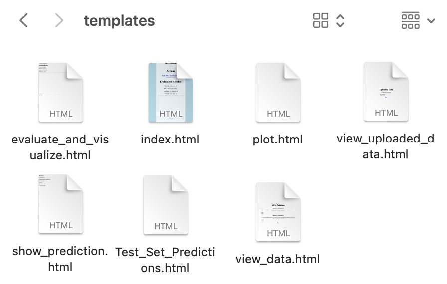
Our web application uses a set of HTML templates, each carefully crafted to improve how users interact with and see data. These templates are essential to the app’s design, blending good looks with practical use. They guide users from the start of entering data to the end of seeing the results. - index.html: Serves as the primary gateway to the web application, designed for predicting call option values. It incorporates Bootstrap for styling, providing a responsive layout with file upload forms, navigation buttons, and result display sections, thus ensuring a user-friendly experience.
plot.html: Utilizes Plotly for dynamic data visualization, offering interactive charts that render complex datasets in an easily digestible format, enhancing the analytical capabilities of the application.view_uploaded_data.html: Lists the uploaded database files, enabling users to access and review the data they have provided, fostering transparency and control over the processed information.view_data.html: Exhibits the content from two distinct datasets, providing a comprehensive view of the data under analysis and facilitating a deeper understanding of the predictive context.show_prediction.html: Displays the outcome of predictive analyses, guiding users to detailed visual representations and insights derived from their data.Test_Set_Predictions.html: Incorporates Plotly JavaScript to generate interactive data visualizations, allowing for an engaging and informative exploration of predictive results within the web environment.
Next, we will conduct a comprehensive analysis of each template’s functionalities and contributions, examining the web pages in our prototype to assess their quality and effectiveness.
3.2.1 Welcome Page
Our welcome page design seamlessly integrates various elements to optimize user experience and functionality. Users are provided with intuitive "Browse" buttons to swiftly upload local CSV files. Upon clicking the "Upload & Save" button, evaluation results are promptly generated within a few-second timeframe, ensuring efficiency in data processing. Additionally, users can easily access and review their uploaded dataset (csv files) online by selecting the "View Data". For a comprehensive analysis, users can explore interactive prediction graphs through the "View Prediction" feature, enhancing their ability to interpret and analyze data trends effectively.
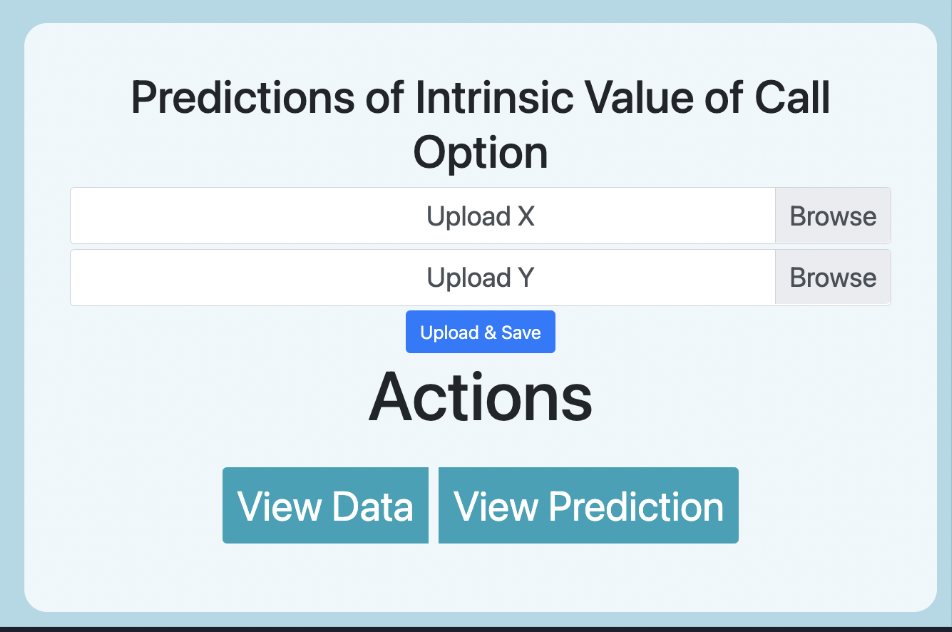
Color Scheme and Aesthetics in index.html
- Color Choice: In
index.html, we deliberately choose a light blue background color (#ADD8E6) to promote a serene ambiance conducive to focused reading and analysis. The semi-transparent white background (rgba(255, 255, 255, 0.8)) within container elements aims to highlight content while maintaining visual harmony.
<style>
body {
background-color: #ADD8E6;
padding-top: 20px;
display: flex;
justify-content: center;
align-items: center;
height: 100vh;
}
.container {
max-width: 800px;
text-align: center;
background-color: rgba(255, 255, 255, 0.8);
padding: 40px;
border-radius: 20px;
}
/* Additional CSS styles are defined in this section */
</style>Modular Design with Bootstrap in index.html
- Grid System Utilization: We utilize Bootstrap’s grid system to create a responsive layout, dividing content into grid columns with classes like
container,row, andcol-*, ensuring seamless alignment across devices. This fosters a visually appealing and user-friendly design. Here’s how it’s integrated:
<div class="container">
<!-- Content structured using Bootstrap's grid system -->
</div>- Custom CSS Classes Integration: Custom CSS classes are integrated to style elements such as buttons, forms, and text, maintaining a cohesive design language and enhancing visual appeal.
.btn-group .btn {
margin: 0 10px;
font-size: 36px;
}- Responsive Design Features: Leveraging Bootstrap’s responsive utilities like breakpoints and flexbox classes (
d-flex,justify-content-center,align-items-center), we ensure our webpage adapts smoothly to various screen sizes and orientations for optimal user experience.
<div class="container">
<iframe src="{{ plot }}" width="100%" height="500px"></iframe>
</div>- Component Reusability: By using Bootstrap’s built-in components such as navigation bars, buttons, and forms, we enhance code modularity and maintain a consistent design language throughout the project, saving time and effort in UI development.
<div class="btn-group" role="group" aria-label="Actions">
<a href="{{ url_for('view_data') }}" class="btn btn-info">View Data</a>
<a href="{{ url_for('show_prediction') }}" class="btn btn-info">View Prediction</a>
</div>3.2.2 Evaluation & Results Page
After clicking the "Upload & Save" button, the client is directed to our Evaluation & Results page, where they can view both numerical results and an interactive graph which provides visual insights, allowing users to explore and analyze the data trends effectively.
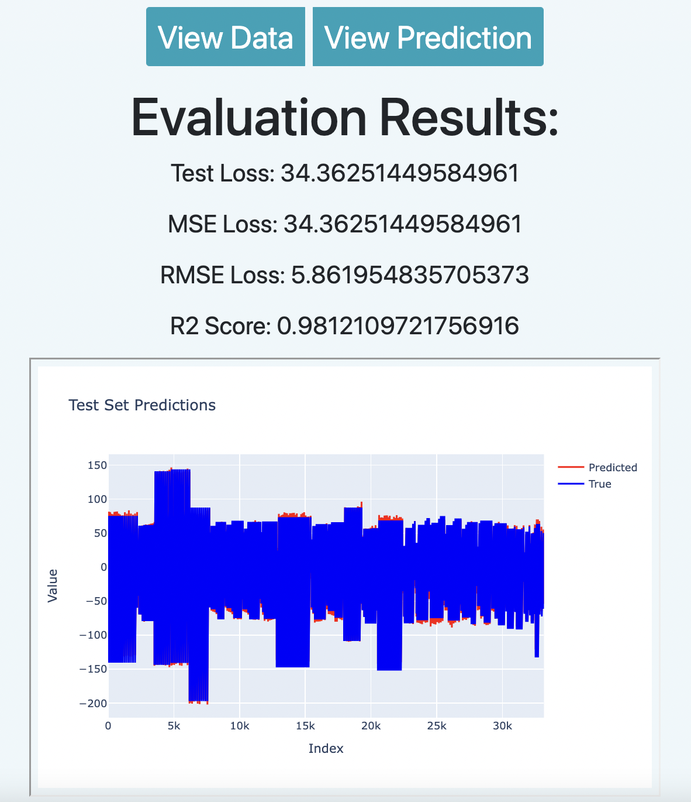
Numerical Results Display in evaluate_and_visualize.html
{% if test_loss is defined %}
<h2>Evaluation Results:</h2>
<p>Test Loss: {{ test_loss }}</p>
<p>MSE Loss: {{ mse_loss }}</p>
<p>RMSE Loss: {{ rmse_loss }}</p>
<p>R2 Score: {{ r2_score }}</p>
<iframe src="{{ plot }}" width="100%" height="500px"></iframe>
{% endif %}Clarity: The page presents evaluation metrics such as Test Loss, Mean Squared Error (MSE) Loss, Root Mean Squared Error (RMSE) Loss, and R-squared (R2) Score in a clear and structured manner using HTML
<p>tags. This clarity enhances the understanding of model performance.Precision: The page ensures the precision and accuracy of displayed numerical values, crucial for data analysis. It typically maintains a precision of at least ten decimal places, ensuring data accuracy for in-depth analysis and comparison.
Contextual Rendering: The use of conditional blocks ensures that numerical results are displayed only when relevant data is available, preventing confusion and presenting information contextually.
Embedding Plotly Graph in evaluate_and_visualize.html
<iframe src="{{ plot }}" width="100%" height="500px"></iframe>- Visual Analysis: The page enhances data analysis by embedding a Plotly graph within an
<iframe>. This interactive graph provides visual insights into trends and patterns, complementing the numerical results. - Interactivity: Users can interact with the embedded Plotly graph, such as zooming, panning, and hovering over data points to view detailed information. This interactivity fosters a deeper understanding of data trends and anomalies.
- Integration: The seamless integration of the Plotly graph within the HTML page enhances user experience, allowing for a comprehensive analysis of model performance with both numerical and visual data representations.
3.2.3 View Data Page
By clicking the “View Data” button, users are directed to the data page, where all previously uploaded data files are displayed. Each file is accompanied by a “View” button on the right-hand side, allowing users to view the uploaded data online with a single click.
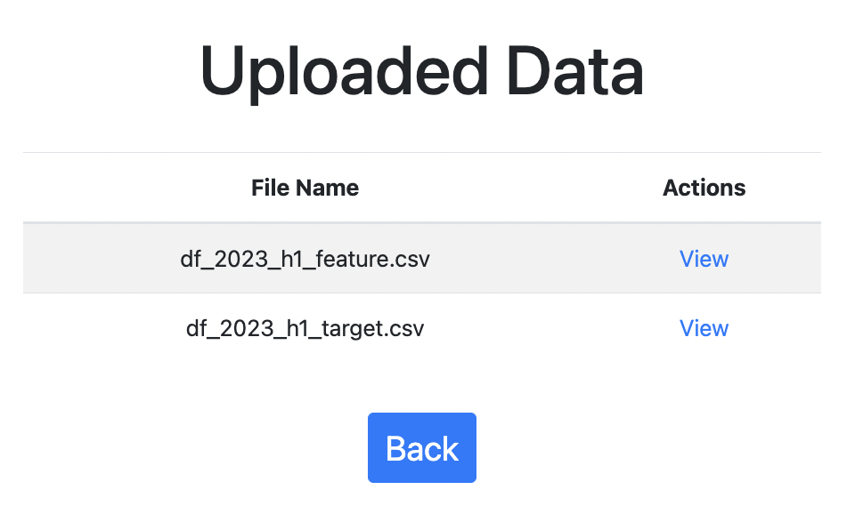
File Listing in view_data.html
<!-- Table body section to display the content. -->
<tbody>
<!-- Loop through each file in the 'files' list passed from the Flask backend. -->
{% for file in files %}
<tr>
<td>{{ file }}</td> <!-- Displaying the file name. -->
<td><a href="{{ url_for('view_data', filename1=file,
filename2=file) }}">View</a></td> <!-- Link to view data. -->
</tr>
{% endfor %}
</tbody>- The “File Name” column displays each uploaded file’s name, fetched from the
fileslist passed from the backend. Within each table row ( ), the file name is displayed in the “File Name” column ( {{ file }} ). This ensures that users can easily identify and select the files they want to view.
Actionable Links in view_data.html
<td><a href="{{ url_for('view_data', filename=file) }}">View</a></td>The “Actions” column provides a convenient “View” link for each file, allowing users to seamlessly navigate to detailed data views with a single click. This intuitive design enhances the overall user experience and promotes efficient data exploration.
The “View” links are dynamically generated using Flask’s powerful
url_forfunction, ensuring accurate and reliable navigation to the corresponding data views.
3.2.4 View Uploaded Data Page
When users click the “View” button on the View Data Page, they are seamlessly navigated to a dynamically generated web page that displays the data they have previously uploaded. This feature provides users with a convenient and intuitive way to access and examine their uploaded datasets within the application, enhancing the overall user experience and facilitating efficient data analysis.
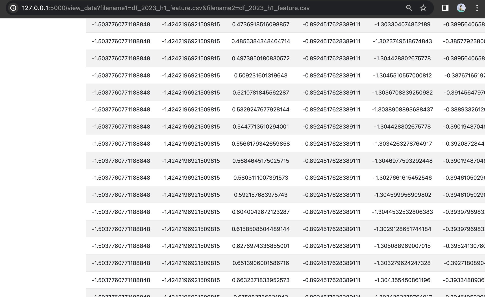
Dynamic Content Rendering in view_uploaded_data.html
The <tbody> section of the table dynamically displays uploaded files. This functionality is achieved through the use of server-side templating, specifically with Jinja2 in Flask, allowing for iteration over a list of files and rendering each as a row in the table.
- Functionality: Iteration over the
filesarray to create a table row for each file. - Data Binding: Server-side rendering with
{ file }to bind file names directly into the table. - Dynamic URL Generation: The
url_forfunction generates actionable links for each file, enabling user interaction.
Here is the code snippet in view_uploaded_data.html illustrating this functionality:
<tbody>
<!-- Table body section to display the content. -->
{% for file in files %}
<!-- Loop through each file in the 'files' list
passed from the Flask backend. -->
<tr>
<td>{{ file }}</td> <!-- Displaying the file name. -->
<td><a href="{{ url_for('view_data',
filename1=file,
filename2=file) }}">View</a></td>
</tr>
{% endfor %}
</tbody>3.2.5 View Prediction Page
Upon selecting the “View Prediction” button on the initial interface, users are directed to a page displaying test set predictions, featuring an interactive graph created with Plotly. This visualization fosters an engaging user experience, permitting detailed examination of the predictions. The graph’s interactive features—zoom, pan, and data point hover—provide enriched informational access, allowing tailored analytical perspectives.
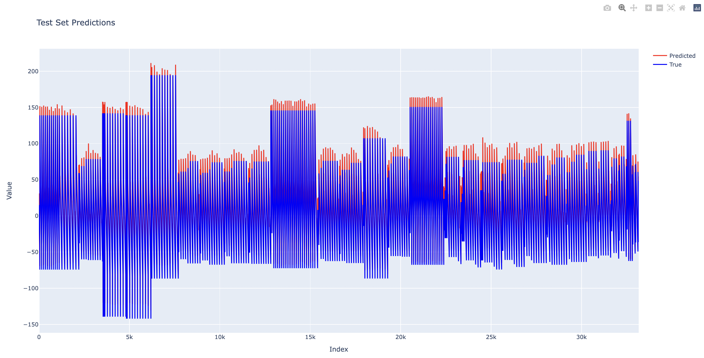
The graph offers intuitive controls for a seamless user experience. Users can double-click to revert to the original zoom level after examining specific intervals. The operation bar in the upper right corner allows users to download the plot as a PNG, autoscale the axes, and reset the axes effortlessly.
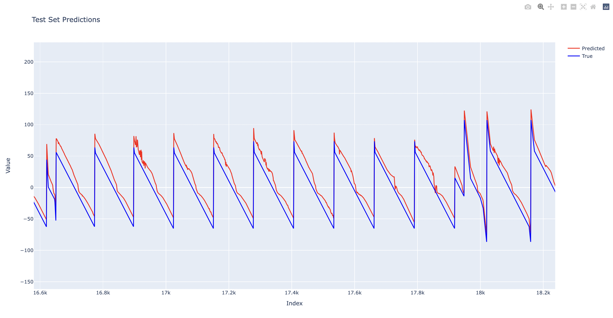
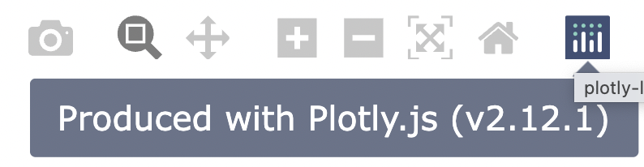
Dynamic Plot Rendering with Plotly in plot.html
<script src="https://cdn.plot.ly/plotly-latest.min.js"></script>
<div id="plot"></div>
<script>
var plot_path = "{{ plot_path }}";
Plotly.d3.html(plot_path, function(error, data) {
if (error) {
return console.warn(error);
}
document.getElementById('plot').innerHTML = data;
});
</script>Integration with Plotly: The inclusion of the Plotly library through the
<script>tag is a significant aspect of this template.Asynchronous Data Fetching: The JavaScript block fetches the plot data asynchronously using Plotly’s d3.html function. This method loads the plot data from a specified path (plot_path), which is dynamically provided by the server-side application. This approach ensures that the webpage remains responsive and that the plot is updated seamlessly without the need for a full page reload.
Dynamic Content Loading: The template utilizes an empty
element with the id plot, which serves as a placeholder for the graph. The actual content of the graph is loaded dynamically through JavaScript, enabling the webpage to render data-driven plots efficiently.
Conditional Rendering and Link Generation in show_prediction.html
{% if prediction %}
<h3>Predicted Mean: {{ prediction }}</h3>
<p><a href="{{ plot }}" target="_blank">View Test Set Predictions Plot</a></p>
{% else %}
<p>No prediction available</p>
{% endif %}
<a href="{{ url_for('index') }}" class="btn btn-primary">Go Back</a>Conditional Content Display: The template employs Jinja2’s conditional syntax {% if prediction %} to check the presence of a prediction variable. This approach ensures that the user interface adapts to the data context, displaying the prediction results when available. If the prediction variable contains a value, the template renders an
<h3>tag showing the predicted mean, enhancing the user’s understanding of the model output.Dynamic Link Creation: The template dynamically generates a link to a plot
(<a href="{{ plot }}" target="_blank">)when prediction data is available. This link, opened in a new tab (target=“_blank”), leads to a detailed visualization of the test set predictions.
Summary
Our web application, through its meticulously designed templates and key features, offers a streamlined and enriched user experience. We are committed to enabling users to efficiently manage, analyze, and interpret their data within a cohesive and intuitive environment. By providing a user-friendly interface and powerful functionality, we sincerely aim to empower users to harness the full potential of their data. Our goal is to support users in making informed decisions and fostering a deeper understanding of their analytical contexts.
4. Conclusion
Based on above step-by-step instruction and illustrations about how we initiate our project of creating a 1D CNN model for predicting the intrinsic values of options and developing a Flask web application for operationalizing the model, we have successfully demonstrated the process of constructing a robust model for financial-related data analysis and integrating it into a user-friendly web interface. Our project embodies various stages, including data preprocessing, model development, training, evaluation, and web application deployment, thereby showcasing the end-to-end process of building a practical machine learning application.
Regarding the ethical ramifications of our project, we emphasize that due to the limitations of data and project complexity, this webapp should NEVER be used for ALL kinds of profit-making activities such as investment, but is only suitable for displaying the complexity and insights of option pricing related data. We adhere to ethical guidelines and promote responsible data handling throughout the development process. We respect copyright and ensure that the data used for the creation of WebApps comes from authoritative websites. We consider data privacy, transparency, and ensuring that users of our webapp have control over their data, understand how it is used, and know the entire process of our webapp creation.
Hope it shows some insights of option pricing, and thanks for reading!